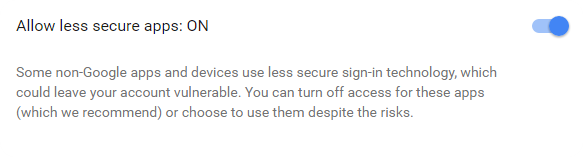
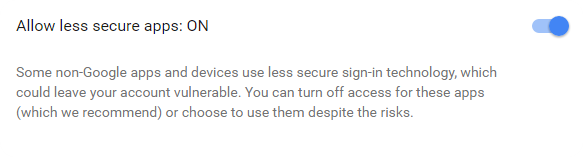

You need to enable some google stuff to use this, since google doesnt have a proper API for Google Music.
The Google account also needs to have the "Allow less secure apps" setting set to "ON".

Go to Google

Go to Google